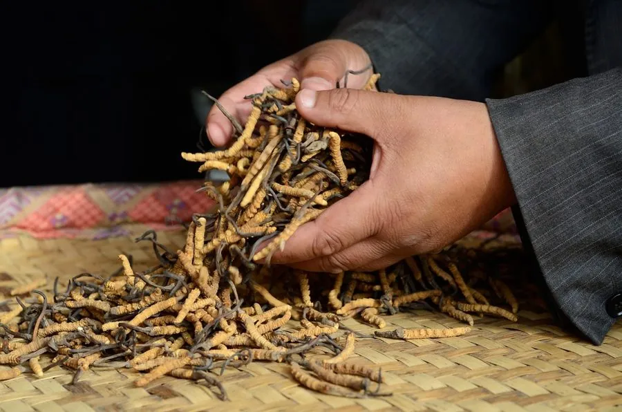

真菌 · 真菌界
冬虫夏草 Ophiocordyceps sinensis

冬虫夏草是寄生在蝙蝠蛾幼虫体内的真菌，冬季虫体僵死、夏季长出草状子座，故名“冬虫夏草”，是名贵中药材。
- 分类
- 门子囊菌门纲散囊菌纲目肉座菌目科线虫草科属线虫草属
- 栖息环境
- 青藏高原海拔 3000–5000 m 的高寒草甸，寄生于蝙蝠蛾幼虫
- 地理分布
- 中国青海、西藏、四川、云南、甘肃等地的高寒草甸
- 保护级别
- IUCN 暂无评估；中国国家二级重点保护野生植物
物种志
冬虫夏草是子囊菌门线虫草科的真菌，生活史奇特。它的孢子感染土壤中的蝙蝠蛾幼虫后，菌丝在虫体内生长，使幼虫僵化死亡，形成“冬虫”；夏季从虫体头部长出细长的子座，露出地面，形似小草，顶端膨大呈棒状，内部着生子囊壳，这就是“夏草”。子座长 4–11 cm，棕褐色；虫体长 3–5 cm，表面深黄至黄棕色，有环纹和足。
冬虫夏草仅分布于青藏高原及周边海拔 3000–5000 m 的高寒草甸，寄主是蝙蝠蛾科昆虫的幼虫，生长周期长达 3–5 年，对温度、湿度和土壤要求苛刻，难以人工大规模栽培。它在中国有悠久的药用历史，被认为有补肺益肾、止血化痰之效，价格昂贵，被誉为“软黄金”。由于过度采挖和草场退化，野生资源急剧减少，冬虫夏草已被列入中国国家二级重点保护野生植物名录，采挖和交易受到严格管理。
形态与习性
- 子座长 4–11 cm，棕褐色
- 虫体长 3–5 cm，表面有环纹和足
- 海拔3000–5000 m 的高寒草甸
- 生长周期3–5 年
- 寄主蝙蝠蛾科昆虫的幼虫
- 采收期每年 5–6 月
- 保护级别国家二级重点保护野生植物
趣味知识
- “冬虫”其实是僵死的蝙蝠蛾幼虫，“夏草”是真菌长出的子座。
- 冬虫夏草生长周期长达 3–5 年，采挖季只有每年 5–6 月的几周。
- 因价格高昂，市场上常有用其他虫草甚至模具压制品冒充的情况。